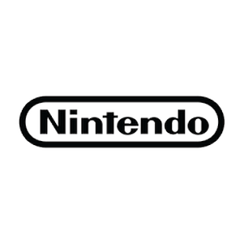

Nintendo™,cette entreprise est l'une des trois plus grandes entreprises du jeu vidéo. Elle règne sur les consoles portables. Ce site web a pour but de montrer tout ce qu'a accompli cette entreprise mythique. Bonne lecture!
Les informations sur les consoles sont tirées de la vidéo de CYRILmp4